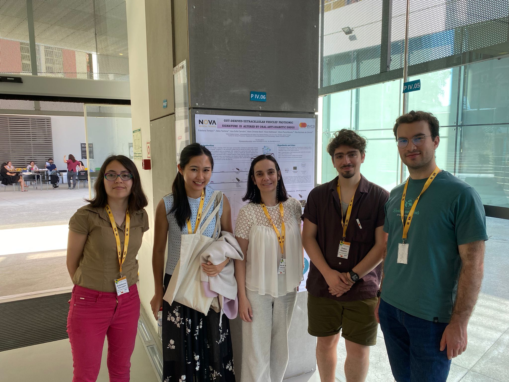
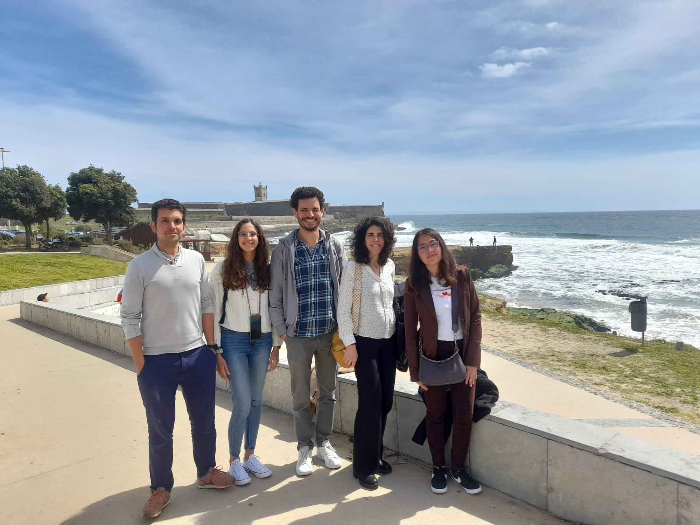

Since 2022
During my PhD, I have been leading a comprehensive multi-omics characterization of extracellular vesicles (EVs) across different stages of metabolic disease. While my work is primarily focused on dry lab approaches, such as omics data analysis, I have also been involved in wet lab tasks, including EVs isolation and characterization.
So far, I have co-authored a peer-reviewed scientific article related to this research (Pereira et al., 2024) and have extensively analyzed scientific and clinical literature to contextualize my findings. Additionally, I’ve collaborated closely with the medical staff at Curry Cabral Hospital, gaining direct experience with patient cohorts.
Beyond my primary research, I have been actively engaged in international collaborations with research groups across Europe and the USA, demonstrating my adaptability to diverse scientific environments. Notably, I secured independent funding through an EMBO Scientific Exchange Grant to join the Systems Biology Lab at Marseille Medical Genetics for 3 months in 2024. This exchange led to the development of a bioinformatics tool designed to explore the effect of EVs proteomics content on target tissues of interest. Currently, I am also supervising two master students.

2022 – 2023
I was responsible for monitoring Vespa velutina (Asian wasp) as an invasive species. This included maintaining and updating the monitoring network and tracking collaborator reports using ArcGIS.
My role also involved developing Python scripts to automate email notifications and managing data and queries using SQL. Additionally, I contributed to public outreach efforts, providing information on beekeeping and how to identify Vespa velutina to the general public.
2020 – 2022
I was hired to develop the project “TARGETInProteome: Establishing CETSA-MS Technology at iBET for Target Engagement Studies,” in collaboration with the Merck and Bayer satellite labs and the Mass Spectrometry (MS) Unit.
My role involved optimizing CETSA and CETSA-MS protocols, developing an MS acquisition method for CETSA samples, and curating a bioinformatics workflow for thermal proteome profiling using iTRAQ labeling. Additionally, I was responsible for cell culture seeding and maintenance, as well as sample preparation for mass spectrometry analysis. The findings from this project are detailed in Ferreira & Torrejón et al., 2024, listed in the Publications section.
2018 – 2019
During my master’s, I conducted the molecular identification of Bartonella DNA, an emerging bacterial pathogen in Europe, using qPCR on samples from ticks, domestic animals, and humans. Additionally, I maintained bacterial blood cultures from dog and cat hosts to isolate Bartonella spp.
The findings from this project are published in Torrejón et al., 2022, listed in the Publications section.
2018 – 2019
I initially joined this lab as an intern and was later hired for specific projects. My work as an intern focused on the serological diagnosis of Carrion’s disease, an endemic Peruvian illness caused by Bartonella bacilliformis that primarily affects newborns and infants, through ELISA and immunofluorescence assays.
Subsequently, as a hired researcher, I contributed to the validation of a molecular detection test for Bartonella DNA in plasma and participated in a survey of Bartonella DNA in Lutzomyia vectors. My final project involved the optimization of a nested PCR protocol for Bartonella species identification in plasma samples.
Additionally, I collaborated in developing workshops for healthcare professionals from various regions of Peru, aiming to expand the diagnostic capabilities for Carrion’s disease in rural areas.